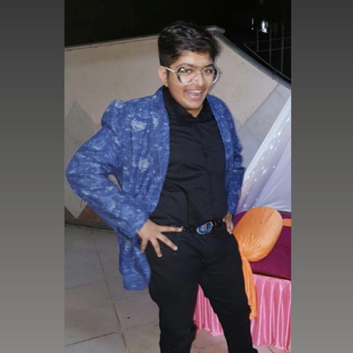

WHY BE COMPASSIONATE?
By Pratham Kenia
September 1, 2020
You must've always heard people advicing everyone to be kind and generous to everyone! Are you compassionate towards strangers?
We all are protective and caring for our own, be it family or friends. But i believe we should extend that generosity, that kindness even to strangers whom we don't know. People might be going through the worst phase of their life and maybe some kind gesture of yours might change their view of looking at the world! When you are compassionate towards someone who's having a bad day or someone who's given up, you might've just turned everything the other way round for them. Some small ways to do that is :
1. When you see a homeless person, think about how you might be able to help them in some way. Buy a nutritious lunch. Ask them if there is anything that they need.
2. Standing in a queue? Let someone go before you.
3. When you are in a coffee shop or café , maybe you could buy a coffee or cake in advance for the next customer that comes in. How tasty! Imagine what a sweet surprise that person will get when they discover that a kind stranger has paid it forward for them.
When a thought of generosity arises within you, act on it. Don’t hold back. This is important. Your act of kindness will surely come back to you someday.
“Courage. Kindness. Friendship. Character. These are the qualities that define us as human beings, and propel us, on occasion, to greatness.”
― R.J. Palacio, Wonder
About Pratham
I am currently doing BBA from NMIMS! I love to bake and create my own desserts and am always up for bollywood movies. Always there if you need someone to talk to, just want people around me to be happy. :)